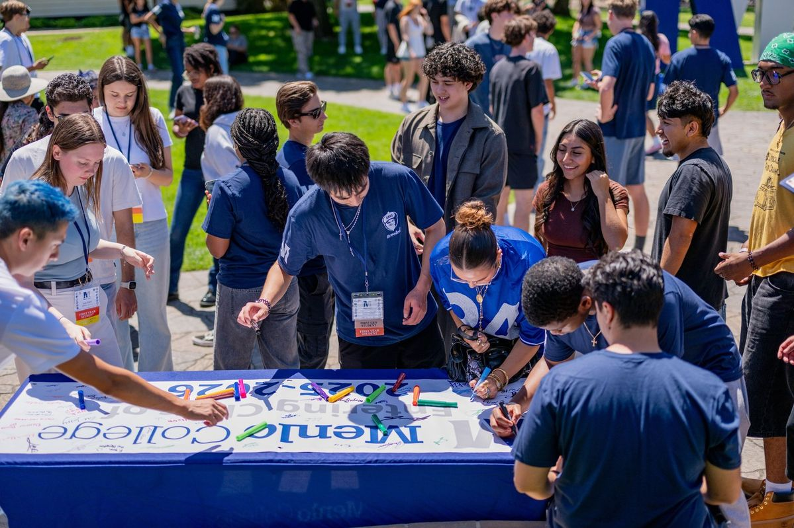
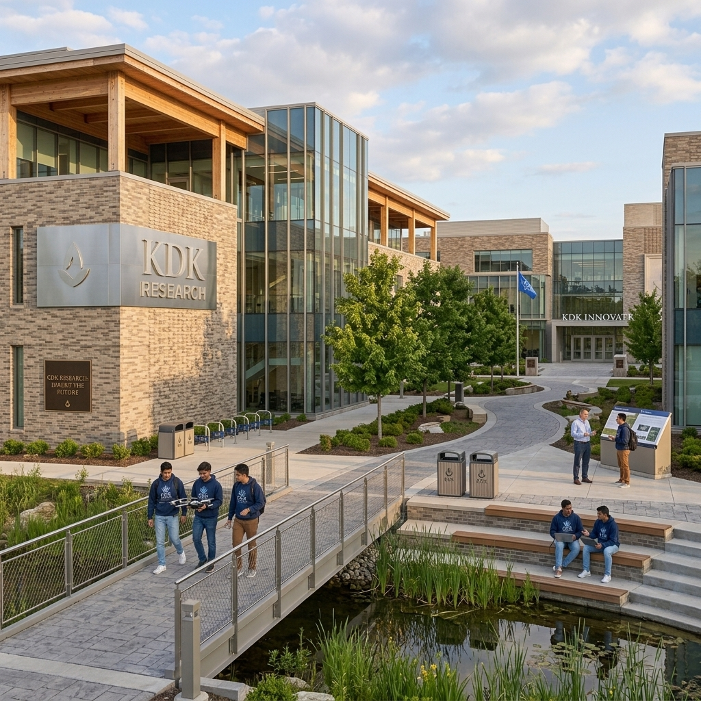
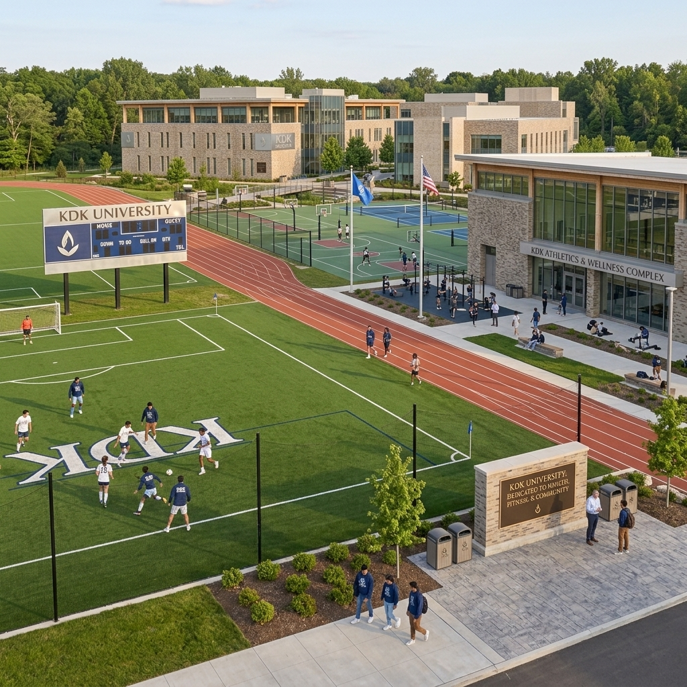
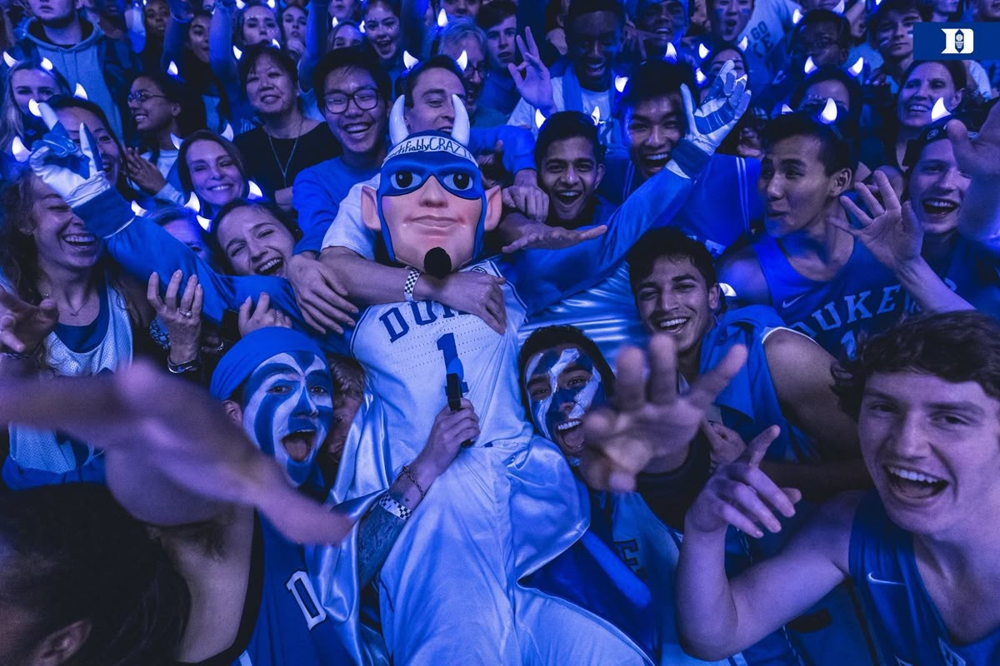

Clubs & communities
Meet students interested in technology, creative work and community projects. Collaborate on ideas outside your degree.
Ask about student clubs
LIFE AT KDK
Study together, try something new and make room for life beyond the classroom.
A PLACE TO BELONG
There is no single way to be a KDK student. Find a community that shares your interests, or discover a new one.

Meet students interested in technology, creative work and community projects. Collaborate on ideas outside your degree.
Ask about student clubs
Take a study break with team sports, a gym session or time outdoors. Build healthy habits alongside your studies.
Ask about sports facilities
Exchange ideas at student-led workshops, creative activities and campus gatherings. Bring your curiosity and get involved.
Ask about campus eventsSPACE TO FOCUS
From a quiet library corner to a shared study table, choose the space that helps you do your best work.
Make time for reading, research and focused work between classes. Find related reading with the book discovery tool on our Home page.
Work through a problem with classmates, rehearse a presentation or develop your next team project.
Take a break from the screen and reconnect with friends in the campus outdoor spaces.

TAKE THE NEXT STEP
Explore your study options and find out how to apply.